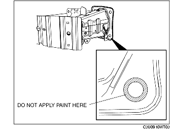

FRONT BUMPER REINFORCEMENT REMOVAL/INSTALLATION
B3E091050070W01
1. Remove the front bumper. (See FRONT BUMPER REMOVAL/INSTALLATION.)
2. Remove the front combination light. (See FRONT COMBINATION LIGHT REMOVAL/INSTALLATION.)
3. Remove the horn. (SeeHORN REMOVAL/INSTALLATION.)
4. Set the following parts out of the way
-
(1) Under cover
-
(2) Electric power steering oil pump (LF)
-
(3) Washer tank
5. Remon the order indicated in the table.
-
Caution
-
• If bolt A (only one location on the lower left) is removed, always replace it with the specialized replacement part (Part No. BPYK 50 0Z2) to ensure proper horn ground connection.
.
|
1
|
Bolt A
|
|
2
|
Bolt B
|
|
3
|
Front bumper reinforcement
|
6. Install in the reverse order of removal.
7. After installation, verify that the horn functions normally.
Front Bumper Reinforcement Installation Note
reusing the front bumper reinforcement
-
Caution
-
• In order to ensure proper body ground connection, do not apply paint in the area where the bolt A flange contacts the front bumper reinforcement.

installing a new front bumper reinforcement
1. Remove the masking tape from the front bumper reinforcement.
-
• If the masking tape has already peeled off, scrape off any rust or paint residue from the masked area.

2. After installing bolt A, apply touch-up paint to the area of the front bumper reinforcement that has remained unpainted.